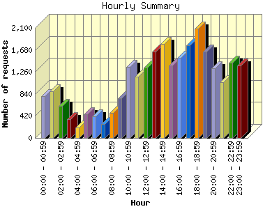
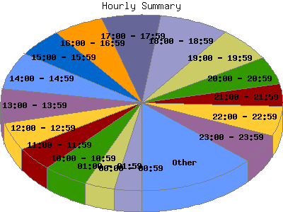

Report generated by Analog 5.91beta1 and Report Magic 2.21
|
Web Server Statistics for "Harish Narayanan (hnarayan) - January 2004" Report generated by Analog 5.91beta1 and Report Magic 2.21 |
The Hourly Summary identifies the level of activity broken down by each hour. Remember that one page hit can result in several server requests as the images for each page are loaded. This summary also compares the level of activity during working hours and after hours as a total for the report time frame.


| Hour | Number of requests | Number of bytes transferred | Percentage of the bytes | Percentage of the requests | |
|---|---|---|---|---|---|
| 1. | 00:00 - 00:59 | 802 | 7.167 MB | 2.60% | 3.07% |
| 2. | 01:00 - 01:59 | 893 | 7.761 MB | 2.82% | 3.41% |
| 3. | 02:00 - 02:59 | 612 | 10.654 MB | 3.87% | 2.34% |
| 4. | 03:00 - 03:59 | 365 | 5.392 MB | 1.96% | 1.40% |
| 5. | 04:00 - 04:59 | 196 | 1.149 MB | 0.42% | 0.75% |
| 6. | 05:00 - 05:59 | 457 | 5.444 MB | 1.98% | 1.75% |
| 7. | 06:00 - 06:59 | 413 | 6.526 MB | 2.37% | 1.58% |
| 8. | 07:00 - 07:59 | 265 | 3.481 MB | 1.26% | 1.01% |
| 9. | 08:00 - 08:59 | 478 | 7.413 MB | 2.69% | 1.83% |
| 10. | 09:00 - 09:59 | 761 | 9.527 MB | 3.46% | 2.91% |
| 11. | 10:00 - 10:59 | 1,354 | 15.217 MB | 5.53% | 5.18% |
| 12. | 11:00 - 11:59 | 1,163 | 11.999 MB | 4.36% | 4.45% |
| 13. | 12:00 - 12:59 | 1,338 | 18.776 MB | 6.83% | 5.12% |
| 14. | 13:00 - 13:59 | 1,646 | 22.123 MB | 8.04% | 6.29% |
| 15. | 14:00 - 14:59 | 1,792 | 23.775 MB | 8.64% | 6.85% |
| 16. | 15:00 - 15:59 | 1,382 | 8.769 MB | 3.19% | 5.28% |
| 17. | 16:00 - 16:59 | 1,522 | 10.613 MB | 3.86% | 5.82% |
| 18. | 17:00 - 17:59 | 1,769 | 24.914 MB | 9.06% | 6.76% |
| 19. | 18:00 - 18:59 | 2,086 | 16.982 MB | 6.17% | 7.97% |
| 20. | 19:00 - 19:59 | 1,647 | 14.412 MB | 5.24% | 6.30% |
| 21. | 20:00 - 20:59 | 1,332 | 9.506 MB | 3.46% | 5.09% |
| 22. | 21:00 - 21:59 | 1,059 | 11.701 MB | 4.25% | 4.05% |
| 23. | 22:00 - 22:59 | 1,440 | 9.064 MB | 3.29% | 5.50% |
| 24. | 23:00 - 23:59 | 1,384 | 12.760 MB | 4.64% | 5.29% |
| Work Hours (8:00am-4:59pm) | 11,436 | 128.212 MB | 46.60% | 43.72% | |
| After Hours (5:00pm-7:59am) | 14,720 | 146.912 MB | 53.40% | 56.28% | |
This report was generated on February 10, 2004 18:12.
Report time frame January 1, 2004 00:06 to January 31, 2004 23:54.
| Web statistics report produced by: | |
 Analog 5.91beta1 Analog 5.91beta1 |  Report Magic 2.21 Report Magic 2.21 |